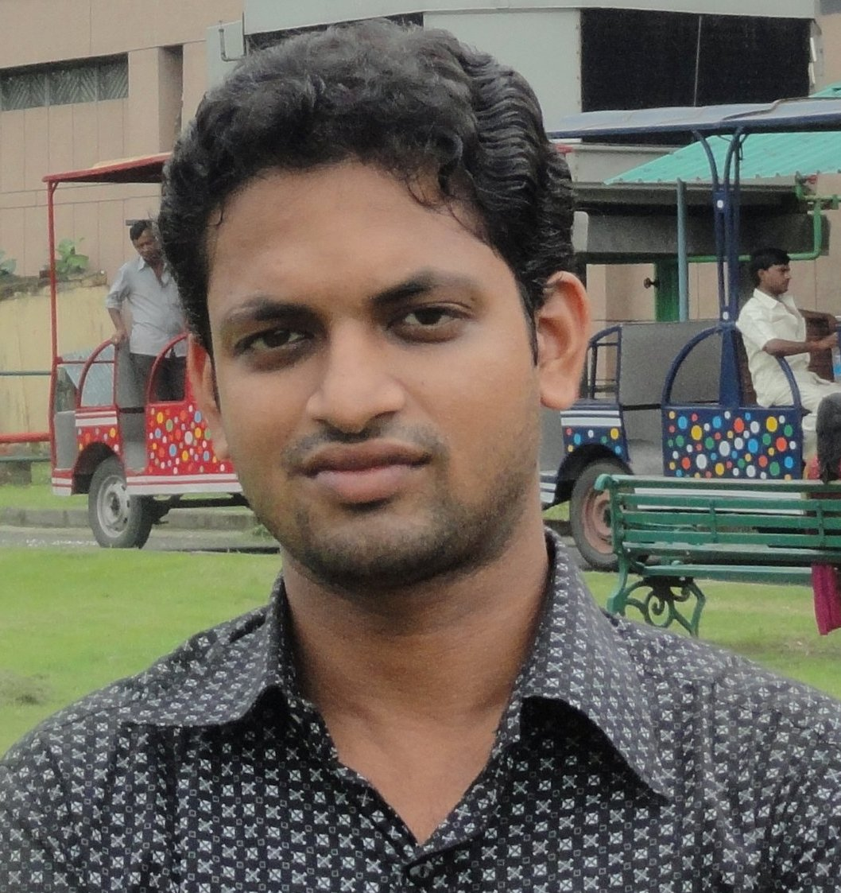

IIT KANPUR
The Utkal Parishad at IIT KANPUR is an association of Oriya Faculty Members, Oriya Students and Oriya Staff Members. This association is a result of the sincere efforts and contribution made by Late Prof. Shreedhar Mohanty towards building a platform where all the Oriya Members of the Institute could freely interact with each other. This association came into existence in the year 1976 on the auspicious occasion of Ganesh Chaturthi. From that position we have traveled a long distance and now our community consists of about 15 faculty members and about 100 students and about 10 staff members. Inside the society one doesn't feel that we are 1000 miles from our home .
Our members are always involved in some kind of social activities. Our members had done a great job for the victims of the Gujurat Earthquake, for the victims of the 1999 cyclone and 2001 flood. A total fund of 3,50,000 Rs was collected from our Faculty Members,Students and Staff Members as a part of our relief work for the 1999 Orissa Super Cyclone and a total fund of Rs.1,50,000 was collected for the 2001 Orissa flood. Our members were volunteers in the Institute's relief work team for the Gujurat earthquake.
At our Institute,we also organize various cultural functions inside our community. We celebrate Ganesh Puja, Saraswati Puja, and Utkal Divas.Cultural programms are also held in the evening.We also hold a Freshers' Welcome evening during the starting of our academic year to welcome the new Oriya faces at IIT Kanpur. We also have started our own magazine 'Pratimbiba" . The first edition of the magazine was released on Ist April 2002 on the grand occasion of Utkal Divas. The magazine contains articles composesd by our members and as well as other Oriya articles from radio telecasts and other sources.

President Dr. Pranab K. Mohapatra Dept. Civil Engineering Email: pranab@iitk.ac.in Homepage: http://home.iitk.ac.in/~pranab/ |

General Secratary Himanshu Bhusan Mishra Ph.D Scholar Dept. Electrical (SPCOM) Email:hbmishra@iitk.ac.in Mobile: 8765951227 |
|
President Dr. Pranab K. Mohapatra Dept. Civil Engineering Email: pranab@iitk.ac.in Homepage: http://home.iitk.ac.in/~pranab/ |
General Secratary Himanshu Bhusan Mishra Ph.D Scholar Dept. Electrical (SPCOM) Email:hbmishra@iitk.ac.in Mobile: 8765951227 |
photo1
New Events
- Please Submit your Manuscript for publication in Magazine(PRATIBIMBA).
- Odia on Thursday became the sixth language of the country to get “classical language" status.
photo2
| # | Name | Current position |
|---|---|---|
| 1. | Dr. Suresh R. Dash | Faculty, Infrastructure,IIT Bhubaneswar |
| 2. | Dr. Naresh Chandra Sahu | Faculty, HSS&M, IIT Bhubaneswar |
| 3. | Dr. D. R. Sahoo | Faculty, Civil, IIT Delhi |
| 4. | Dr. M. K. Moharana | Faculty, Mechanical, NIT |
| 5. | Dr. Kamal Lochan Patra | Faculty, NISER,Bhubaneswar |
President
Dr. Pranab K. Mohapatra
Dept. Civil Engineering
Email: pranab@iitk.ac.in
Homepage: http://home.iitk.ac.in/~pranab/
General Secratary
Himanshu Bhusan Mishra
Ph.D Scholar
Dept. Electrical (SPCOM)
Email:hbmishra@iitk.ac.in
Mobile: 8765951227
Email us at : utkalparishad@gmail.com
UPCOMING EVENTS
12 JAN
TITLE
Here , we can write about all the happenings of the event .
28 JAN
TITLE
Description of the event
3 FEB
TITLE
Description of the event
UPDATES
Jan 28,2014
Here , we can write about all the happenings of the association and its people.
Jan 30,2014
Here , we can write about all the happenings of the association and its people.
Feb 31,2014
Here , we can write about all the happenings of the association and its people.
CONTACT US
Utkala Association,IITM
Social Activities
Our members are always involved in some kind of social activities. Our members had done a great job for the victims of the Gujurat Earthquake, for the victims of the 1999 cyclone and 2001 flood. A total fund of 3,50,000 Rs was collected from our Faculty Members,Students and Staff Members as a part of our relief work for the 1999 Orissa Super Cyclone and a total fund of Rs.1,50,000 was collected for the 2001 Orissa flood. Our members were volunteers in the Institute's relief work team for the Gujurat earthquake.
Past activities
Flood Relief 2008-09 (Odisha) : By IIT Kanpur faculties and students
Orissa Disaster Relief Fund